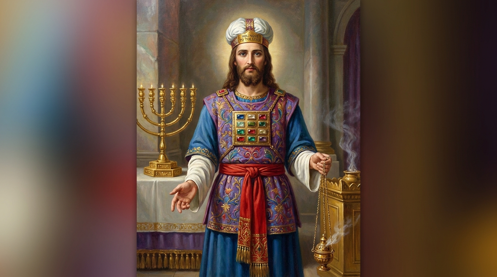

A Superioridade de Cristo e a Nova Aliança
A Carta aos Hebreus foi escrita para judeus convertidos ao cristianismo que, enfrentando perseguição, estavam sendo tentados a abandonar a fé e retornar aos antigos rituais do judaísmo. O autor, que permanece anônimo, constrói um argumento magistral para mostrar que Jesus é superior a tudo o que veio antes: Ele é superior aos anjos, a Moisés, aos líderes religiosos e aos sacrifícios de animais. Hebreus prova que Cristo é o cumprimento perfeito do Antigo Testamento e o nosso definitivo Sumo Sacerdote, estabelecendo uma Nova Aliança. O livro também traz a famosa "Galeria dos Heróis da Fé" (capítulo 11), incentivando os cristãos a perseverarem com os olhos fitos em Jesus.
Ficha Técnica
- Autor: Desconhecido (historicamente debatido entre Paulo, Apolo, Lucas ou Barnabé).
- Tema Principal: A supremacia absoluta de Cristo, a Nova Aliança e a chamada à perseverança na fé cristã.
- Versículo-Chave: "Portanto, também nós, uma vez que estamos rodeados por tão grande nuvem de testemunhas, livremo-nos de tudo o que nos atrapalha e do pecado que nos envolve, e corramos com perseverança a corrida que nos é proposta, tendo os olhos fitos em Jesus, autor e consumador da nossa fé." (Hebreus 12:1-2)
Estrutura
- A superioridade de Cristo sobre os profetas e os anjos (Caps. 1-2)
- A superioridade de Cristo sobre Moisés e a promessa do descanso (Caps. 3-4:13)
- A superioridade do sacerdócio de Cristo, Seu sacrifício perfeito e a Nova Aliança (Caps. 4:14-10:18)
- O chamado à perseverança, os grandes exemplos de fé e exortações finais (Caps. 10:19-13)